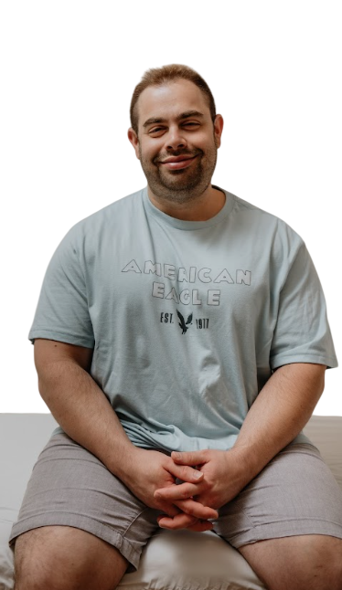

יש דרך אחרת. בלי כדורים. בלי שנים על הספה. שיטה שמדברת ישר אל המקום שבו הכאב באמת יושב — ומשחררת אותו משם. 95% מהמטופלים מדווחים על הקלה כבר מהפגישה הראשונה.
שבה הכאב הפנימי לא מרפה — לא משנה כמה אתה ניסית. לא משנה לכמה מטפלים אתה הלכת, כמה ספרים אתה קראת, או כמה כדורים אתה לקחת.
אמרו לך שזו הדרך היחידה. תרופות לחרדה, נוגדי דיכאון, כדורי שינה. אתה לא רוצה לחיות ככה — ובצדק.
פסיכולוגים, מטפלים, שיחות אינסופיות. דיברתם על העבר עד אין סוף, אבל ההווה עדיין כואב באותו מקום.
משהו תקוע בפנים שאתה לא יודע איך להגדיר. לחץ בחזה, חוסר שקט, קול ביקורתי שלא נותן רגע מנוחה.
אירועים מהעבר שעדיין שולטים בהווה. מערכות יחסים, פחדים, דפוסים שחוזרים על עצמם שוב ושוב.
הטיפול הרגשי-אנרגטי לא מנסה לנתח את הכאב — הוא ניגש ישר אל המקום שבו הוא יושב בגוף, ומשחרר אותו משם. זאת הסיבה שזה עובד מהר. זאת הסיבה שאנשים מרגישים שינוי כבר באותה הפגישה.
הגוף יודע לרפא את עצמו כשנותנים לו את הכלים הנכונים. אנחנו עובדים עם המערכת הטבעית שלך — לא נגדה.
מה שאתה לא יכול להגדיר, אתה לא יכול לרפא. אני עוזר לך לפרק את הרגש לחלקים שאפשר באמת לעבוד איתם — ואז להרכיב אותך מחדש.
כשהקול הפנימי הביקורתי נחלש, נוצר מקום לבהירות, לקבלה עצמית, ולתחושת שייכות לחיים של עצמך.
כשיש פחות ביקורת פנימית — יש יותר שקט. יותר בהירות. ויותר מקום להיות אתה. — דור אוסטריך
זה לא קסם, וזה לא הבטחת שווא. זאת תוצאה של שיטה שמדלגת על השלב של "בואו נדבר על זה" — וניגשת ישר למקום שבו הרגש באמת חי. רוב האנשים שמגיעים אליי כבר ניסו דרכים אחרות. הם לא באים בשביל עוד ניסיון — הם באים בשביל תוצאה.
ליווי רגשי-אנרגטי הוא לא לכולם. הוא לאלה שכבר עברו את השלב של "אולי זה יעבור מעצמו".
תהליך מותאם אישית, לא תבנית קבועה. אנחנו מתקדמים בקצב שלך — לא בקצב של מערכת.
שיחה קצרה (כ-20 דקות) שבה אנחנו מבינים מה אתה מביא, מה אתה ניסית עד היום, ומה הציפיות שלך. אם אני לא חושב שאני האדם הנכון בשבילך — אגיד לך את זה ישר.
פגישה אחת, פנים אל פנים או באונליין. כאן אנחנו מתחילים לפרק את הרגש לחלקים, ולשחרר את מה שתקוע. רוב האנשים מרגישים שינוי משמעותי כבר בפגישה הזאת.
תהליך מותאם אישית — לא תבנית קבועה. יש מי שצריך 3 פגישות, יש מי שצריך 12. אנחנו מתקדמים בקצב שלך, לא בקצב של מערכת.
המטרה היא לא ליצור תלות. המטרה היא שתצא מהתהליך עם כלים אמיתיים שמלווים אותך כל החיים — ועם תחושה שיש לך גישה לעצמך.

שמי דור אוסטריך, ואני מלווה אנשים, זוגות וילדים בתהליכים רגשיים-אנרגטיים. אני לא פסיכולוג, ואני לא מתיימר להיות. אני מתמחה במשהו אחר לגמרי — בתרגום רגשות למילים.
יש לי שיטה שעבדה על עצמי לפני שהיא עבדה על אחרים. עברתי בעצמי תהליכים שהבנתי בהם שהמערכת הרגילה — תרופות, שיחות, אבחנות — לא תמיד יודעת לגשת למקום הנכון. כשמצאתי את הגישה האנרגטית, משהו בי השתנה. ומאז, אני עוזר לאנשים אחרים להגיע לאותו מקום.
אני מקבל אנשים בכל גיל ובכל מצב — יחידים, זוגות, הורים וילדים. עברתי הכשרה ייעודית בעבודה עם טראומות, ויש לי גישה ייחודית שמשלבת בין רגש, גוף ומילים. 95% מהמטופלים שלי מדווחים על הקלה משמעותית כבר אחרי הפגישה הראשונה.
אם אתה לא מצאת תשובה — כתוב לי, ואחזור אליך תוך 24 שעות.
שיחת היכרות אורכת 20 דקות, היא לא עולה כסף, ואין בה שום מחויבות. תספר לי מה אתה מביא, אני אגיד לך אם אני יכול לעזור — וביחד נחליט מה הצעד הבא.
קבע שיחת היכרות חינם ←